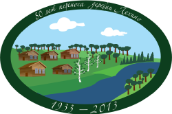

Деревня Лохино
Московская губернияЗвенигородский уездПавловская волость
9 мая 2016 год
Сегодня день памяти 27 млн. погибших людей нашей страны.
Прошло 71 год со дня окончания
Великой Отечественной войны.
Длилась война 1418 дней.
Потери гражданского населения СССР в Великой Отечественной войне составили
13 684 692 чел.
Людские потери СССР — 12 млн. военнослужащих убитыми и умерших от ранений, 555 тыс. умерших от болезней, погибших в результате происшествий, осуждённых к расстрелу (по донесениям войск, лечебных учреждений, военных трибуналов) и 4,5 млн. попавшими в плен и пропавшими без вести.